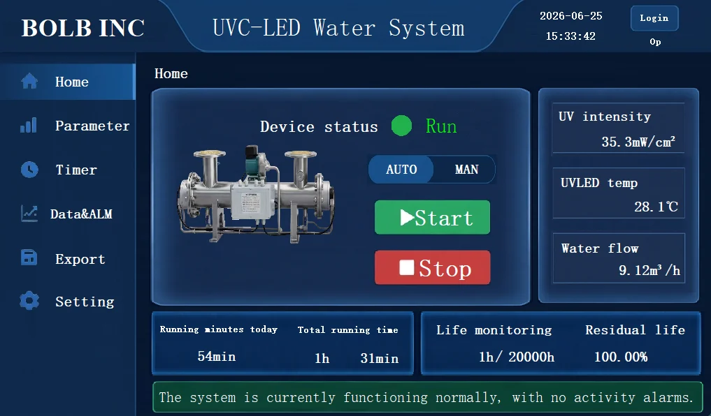

Higher flow shortens exposure, while lower flow may allow source dimming to conserve energy.
Water application engineering
Design the light engine around flow, UVT, and dose.
Water treatment requires the UV-C source, reactor geometry, hydrodynamics, thermal system, sensing, and controls to work together. Bolb supplies packaged LEDs and arrays; customers build and validate the finished reactor.

How to read this application page
Bolb supplies the UV-C source. The complete systems shown are real-world implementation references.
A microbial-reduction result belongs to the complete system and its test conditions—not to an LED by itself. Bolb LEDs and modules provide wavelength and optical power; the OEM controls geometry, dose distribution, airflow or flow, shielding, sensing, thermal design, and final validation.
Bolb LED, module, array, integration support
System builder Fixture, reactor, controls, certification
Published claim Only for the tested organism and conditions
Application challenge
Delivered dose changes with the water and the reactor.
Flow rate sets residence time; UV transmittance and path length determine attenuation; mixing controls dose distribution; fouling changes optical transmission; and source temperature affects output and life.
Absorption and suspended material reduce light penetration and influence allowable optical path length.
Source placement, reflections, mixing, and low-dose trajectories determine system performance.
Cooling, quartz cleanliness, sensor drift, and LED degradation must remain visible to the controller and operator.
Choose source format from reactor scale.
 Packaged LED
Packaged LEDS3535-H 265 nm
Distributed reactor layouts
Use packaged emitters when the OEM needs precise source placement around a compact optical path or custom chamber.
View S3535-H → High-output array
High-output arrayS3535-H 5×5
Higher-flow treatment
Dense output can support higher flow, larger optical demand, or shorter treatment targets when active cooling and reactor geometry are engineered together.
View 5×5 array → Custom architecture
Custom architectureCustom arrays
Shape output around the chamber
Custom boards can follow reactor circumference, port layout, cooling interface, electrical strings, and service requirements.
Discuss a custom design →Reference implementation using UV-C LEDs
Partner-built B-W10T inline reactor.
The B-W10T is presented as a real-world reactor architecture that integrates UV-C LEDs into a complete high-flow system. It is not part of Bolb’s commercial LED/module catalog; the reactor manufacturer owns the vessel, controls, certification, warranty, and system support.

Complete-system architecture · Not a Bolb component product
Reactor, control cabinet, sensing, and cooling.
The reference manual describes a 10 T/H, 265–280 nm inline system with a stainless-steel chamber, flow-paced LED control, UV-intensity and temperature monitoring, alarms, data export, and thermal protection. It demonstrates the engineering context in which Bolb LEDs or custom arrays may be selected.
UV-C LED reactorCustomer-designed optical and pressure-vessel assembly
Control cabinetPLC, HMI, drivers, protection, and operating logic
Process sensingFlow, UV intensity, and LED temperature
Cooling systemThermal management and shutdown protection
Reference-system flow10 T/HInline treatment example
Reference-system wavelength265–280 nmUV-C LED source
Reference-system test target≥99.9%Tested against E. coli*
Reference-system input500 WComplete system
Reference-system source-life statement20,000 hManual-stated rating
*Manual-stated target tested against E. coli. It is evidence for this reactor under its test conditions—not a general result for every water system using the same wavelength or LED family.
Customer-system control example
Flow-paced operation and process visibility.
The implementation illustrates control capabilities OEMs may consider when developing a production water reactor around Bolb LEDs or arrays.

Flow-paced LED drive
The customer controller uses the inlet flow signal to adjust LED drive as flow changes.
Live monitoring
UV intensity, source temperature, flow, status, operating hours, and estimated remaining life are displayed.
Alarm and thermal protection
Low intensity, temperature, flow, and cooling faults inform shutdown and service decisions.
Schedule and records
The interface includes scheduled operation, historical trends, alarm logs, and USB CSV export.
Customer system documentation
Open customer manual →B-W10T Installation, Operation & Maintenance Manual
Keep this download only after the customer approves public distribution and attribution.
A high reduction rate is produced by dose delivery through the complete reactor.
The LED is the UV-C source; the result depends on flow, UV transmittance, path length, mixing, fouling, thermal control, and the organism used in testing.
≥99.9% E. coli reduction
Reported for the B-W10T reference reactor at its 10 T/H rated-flow application.
- Reference conditions
- 265–280 nm source range, customer reactor geometry, stated water-temperature and pressure limits
- Correct website wording
- “A partner-built reference reactor using UV-C LEDs reported a ≥99.9% E. coli target at 10 T/H.”
No universal water-treatment rate
The same LED can produce a different reduction in another reactor or water matrix.
- Revalidation triggers
- Different UVT, flow, organism, path length, fouling state, optical layout, or drive condition
- OEM responsibility
- Determine dose distribution and complete microbial challenge testing for the final system
Bolb’s role
Use the reference system to prove that Bolb UV-C sources can support high-flow industrial architectures. Direct customers to Bolb for emitter/module selection; direct complete-reactor performance, certification, and service questions to the system manufacturer.
Define the reactor before finalizing the array.
| Input | Engineering effect | Bolb support path |
|---|---|---|
| Flow and operating range | Residence time, source power, dimming range, and hydraulic design | LED/module output selection and custom array review |
| UV transmittance | Optical path length, source placement, reflections, and dose distribution | Optical architecture and ray-set discussion |
| Water temperature / environment | Cooling, output, source life, cabinet, and material choices | Thermal design and derating review |
| Target organism and reduction | Required dose and validation method | Source selection inputs; customer owns microbial validation |
| Maintenance strategy | Fouling monitoring, quartz access, source replacement, and calibration | Module serviceability and optical-interface planning |
Water-reactor engineering
Discuss the light engine →Share flow, UVT, geometry, and dose targets.
Bolb can help select packaged LEDs, standard modules, or a custom array for the light engine; the OEM remains responsible for the complete reactor and validation.